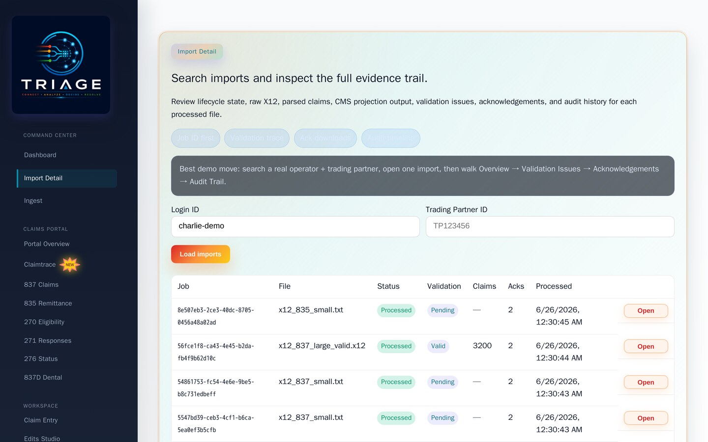
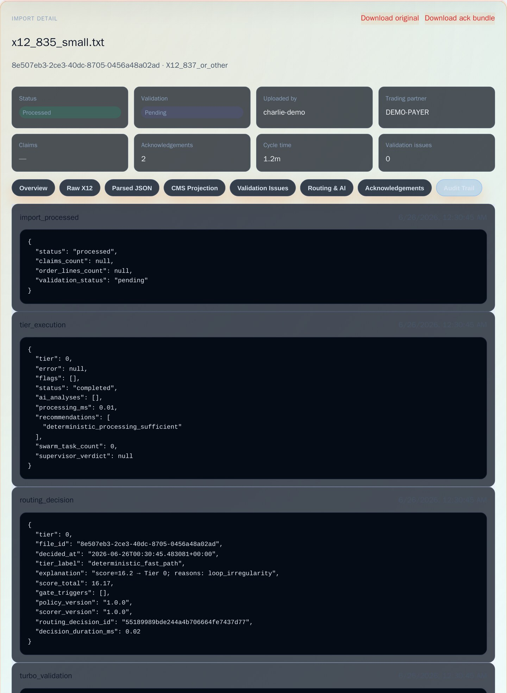
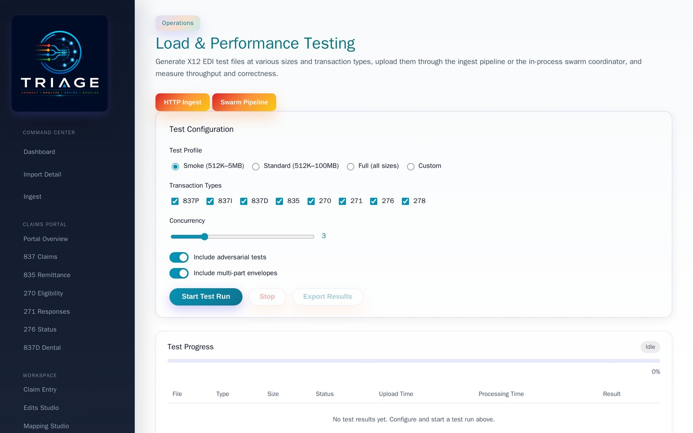
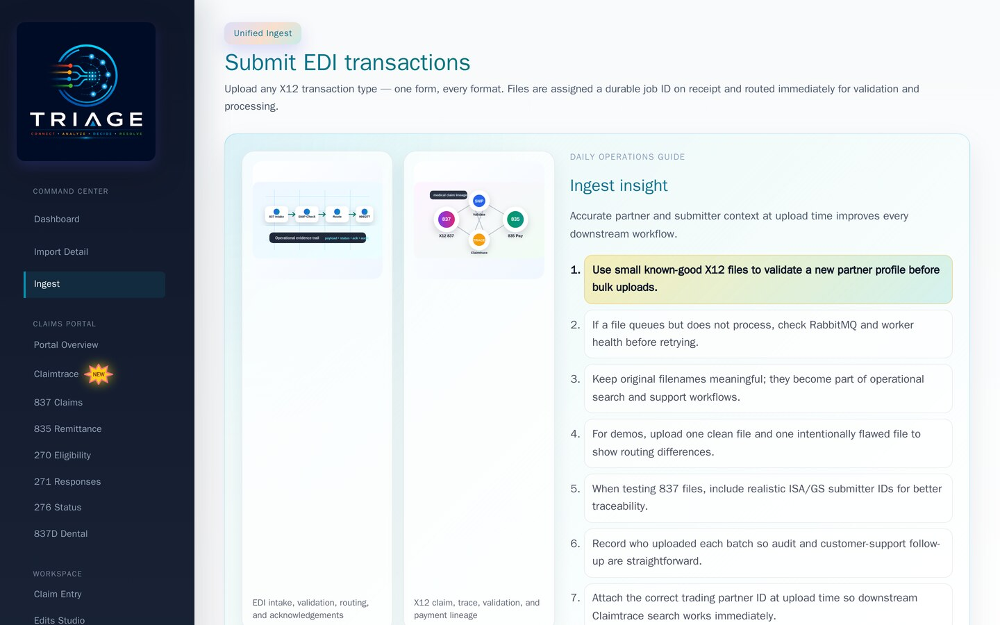
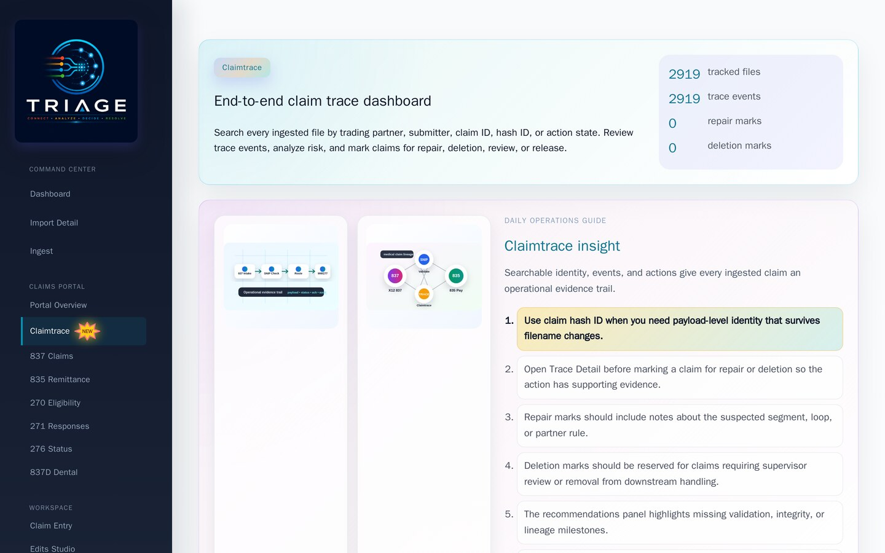
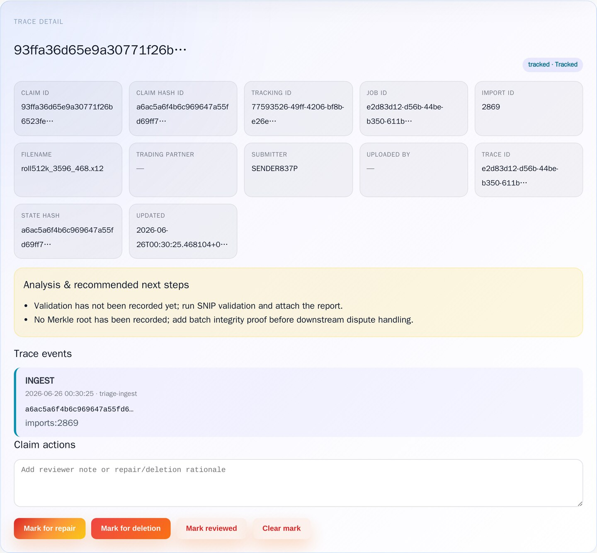
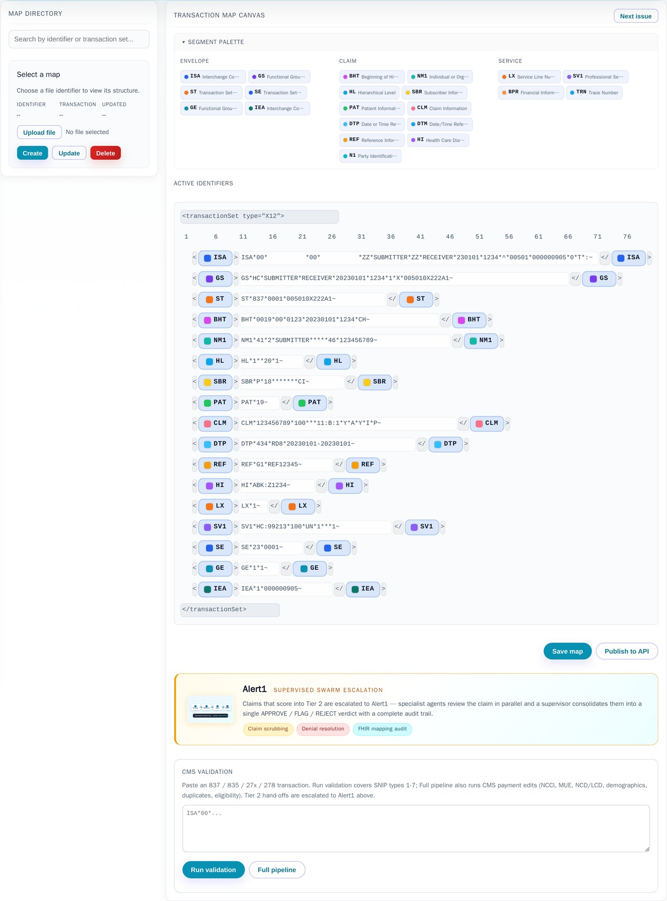

Hey Charlie — here's a live look at Triage, the EDI/X12 healthcare-claims platform I've been working on: ingest, validate, scrub, route, and trace claims end-to-end, with a cryptographic audit trail on every one. These screens were captured straight from a running instance under live load.
A slowed, narrated-by-motion pass through the running application — import processing and audit trail, the Claimtrace dashboard, the transaction mapping canvas, and a live repair & re-submit of a claim with a segment-count error. Dead time is trimmed; playback is slowed so each change is easy to follow.
Every ingested file is searchable by operator and trading partner, with status, validation result, claim counts, and acknowledgements at a glance — each import opens a full evidence trail (raw X12, parsed JSON, CMS projection, validation issues, acks, audit log).

Open any import and every step is on the record — status, validation, cycle time, routing decision, and an append-only audit log. Nothing about how a claim was processed is a black box.

Triage generates realistic X12 files across every transaction type and size, runs them through the ingest pipeline (or an in-process swarm coordinator), and measures throughput and correctness. The screenshots here were taken while a continuous load test was running.

Operators drop files in directly; the platform fingerprints, validates and routes each one, kicking off the downstream pipeline automatically.

Every claim gets a deterministic identity and an append-only, Merkle-anchored trace. Search by partner, submitter, claim ID, or payload hash; review trace events, risk, and recommended actions. This dashboard was tracking 2,700+ live claims at capture time.

Picked at random from the live set: the deterministic claim identity, payload hash, event lineage, and recommended actions — the per-claim audit record that survives filename changes and re-submissions.

deterministic identity SHA-256 payload hash append-only journal Merkle proofs event lineage
Every X12 transaction is visualized as a live map of its segments — envelope, claim, and service groups — so operators can see the structure, spot anomalies, and adjust field mappings without reading raw EDI.

When a file is halted by a syntax error, the Edits Studio shows exactly what's
wrong and lets an operator correct it in place. In the tour above I fix a real defect — an
837P whose SE trailer reports the wrong segment count (23 where the
transaction actually has 13) — and re-submit it straight back into the pipeline.
syntax-aware editor segment-count validation one-click re-submit
To see how it holds up, I ran a continuous one-hour stress test against a single worker: a non-stop stream of 512 KB X12 claim files, and — on top of that — one each of a 5, 10, 50, and 100 MB file dropped into the queue every 10 minutes. It processed everything end-to-end without a single failure, and file uploads stayed under a second the whole time. This was the un-tuned baseline; scaling out workers multiplies it.